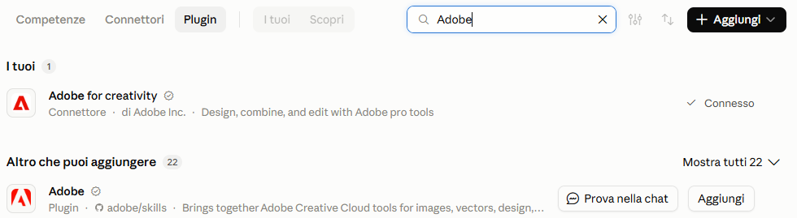
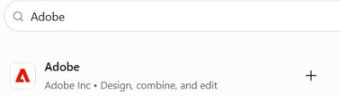

Collega Adobe a Claude o a ChatGPT, e chiedi in italiano
Alleghi il video in chat e scrivi cosa vuoi: niente da installare sul computer. È la strada più veloce da collegare, e per cominciare basta l'account Adobe gratuito
Cosa fa, e cosa non fa
- Riformatta il video per Reels, Shorts e le altre piattaforme
- Unisce più clip in una sola sequenza
- Crea un highlight da un video lungo
- Ripulisce l'audio
- Non capisce cosa dici: il taglio automatico guarda le immagini, quindi non toglie le esitazioni (per quelle c'è Descript, qui sotto)
- Non sa che video ti serve: quello glielo dici tu, con la scheda del video
Collega Adobe a Claude
- Apri claude.ai (o l'app sul computer) e nel menu a sinistra premi «Personalizzazione»
- Scegli «Connettori», poi «Scopri»: cerca «Adobe» e premi il «+»
- Accedi con il tuo account Adobe e consenti l'accesso
- Se hai un piano a pagamento, apri anche «Plugin» e premi «Aggiungi» su Adobe: ti dà i flussi già pronti. Non è obbligatorio
- In chat premi «+» in basso a sinistra, poi «Connettori», e accendi Adobe per quella conversazione

la scheda «Plugin»: sopra c'è già il connettore, collegatoCollega Adobe a ChatGPT
- Apri chatgpt.com (o l'app) e nel menu a sinistra premi «Plugin»
- Cerca «Adobe» e premi il «+»
- Se compare «Installa plugin» o «Collega», premilo e accedi con il tuo account Adobe
- In chat scrivi @Adobe, oppure premi «+» e scegli Adobe, poi allega il video

il «+» sulla riga di Adobe è dove si parteUna richiesta alla volta
Parti con qualcosa di piccolo: ti dice se il collegamento funziona, prima di affidargli un lavoro vero. Ogni richiesta ha la versione base e quella con la scheda del video: la seconda è quella che dà un risultato tuo
Adatta il video per Reels e Shorts
Versione base: «Ridimensiona questo video per YouTube Shorts». Quella qui sotto ti evita di ritrovarti tagliata fuori dall'inquadratura
[incolla la scheda del video] Ridimensiona il video che ti allego in verticale 9:16, per Reels e Shorts. Tienimi sempre al centro dell'inquadratura e non tagliare le scritte che ho già messo. Se in qualche punto non ci sto tutta, dimmi in che minuto invece di decidere da solo
Un highlight di 30 secondi da un video lungo
Versione base: «Crea un highlight reel di 30 secondi da questo video». Senza la scheda sceglie i momenti più movimentati, non quelli che servono a te
[incolla la scheda del video] Dal video che ti allego crea un highlight di 30 secondi. Scegli solo i momenti che servono al punto 2 della scheda e apri con il più forte. Prima di montare, elencami quali momenti hai scelto, con i minuti, e perché
Unisci più clip in una sequenza
Versione base: «Unisci queste clip in un'unica sequenza». Dagli tu l'ordine: è una scelta di racconto, non di montaggio
Unisci le clip che ti allego in un'unica sequenza, in quest'ordine: 1. [nome della clip] 2. [nome della clip] 3. [nome della clip] Niente transizioni a effetto tra una clip e l'altra, e lascia l'audio di ogni clip com'è
Per togliere «ehm» e ripartenze serve Descript
Né Adobe né Remotion tolgono le esitazioni dal parlato, perché non capiscono cosa dici. Descript sì: si collega a Claude o a ChatGPT come gli altri strumenti, accedi con il tuo account Descript e gli chiedi il lavoro a parole
In Claude è un connettore, in ChatGPT un plugin: lo cerchi per nome come hai fatto con Adobe e accedi con l'account Descript. Ogni modifica finisce in un progetto nel tuo spazio Descript, che puoi aprire per rifinire
Le funzioni AI di Descript consumano crediti: il piano gratuito basta per provarlo, se lo usi su ogni video ti serve quello a pagamento. Prezzi nella pagina cosa costa, davvero
Togli esitazioni e ripartenze
Nel video che ti indico togli le parole di riempimento (ehm, cioè, allora ripetuti) e le ripartenze, quando ricomincio la stessa frase. Lascia tutto il resto com'è Regola: taglia solo frasi intere o parole di riempimento, mai una frase a metà. Alla fine dimmi quanti tagli hai fatto e quanto dura il video adesso
Altri strumenti video che abbiamo trovato

Adobe adatta il video, ma non ti dice che video fare. Stratego è la piattaforma di Unlike che ti crea la strategia social e il piano editoriale, con formato, obiettivo e gancio di ogni contenuto: le domande te le fa lei, con il nostro metodo davanti
Mettiti in lista d'attesa →